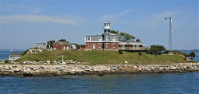
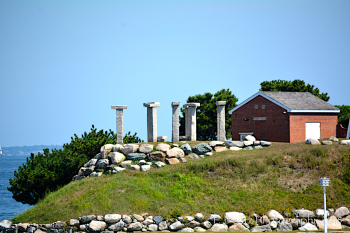

North Dumpling Island is a two-acre (8,100 m2) island in Fishers Island Sound of Long Island Sound, one mi (1.6 km) off the coast of Connecticut, south of Groton, within the territory of the town of Southold on Long Island in New York State. The island is about 0.3 nmi (560 m) north of South Dumpling Island, and is home to the North Dumpling Light, which dates from 1859. The island is privately owned by Dean Kamen, inventor of the Segway.
History

In 1639, John Winthrop, son of the governor of the Massachusetts Bay Colony, bought Fishers Island and the small islets around it, including those called "The Dumplings". Ownership of the islands, including North Dumpling, remained with the Winthrop family until 1847, when it was sold to the federal government for $600 ($19,620 in 2023) to be the site of a lighthouse.
The lighthouse and the keeper's dwelling were built and the light illuminated in 1859, and then rebuilt in 1871 with a taller tower. The lighthouse was deactivated in 1959, being replaced by an automated light on a skeleton tower, and the grounds and lighthouse were sold to a private party, George Washburn.
The island was purchased in 1977 by David Levitt, president of the Doughnut Corporation of America, who remodeled and expanded the house. Levitt convinced the Coast Guard to move the light back to the stone tower and to remove the skeleton tower. Levitt added sculptures to the island, including Temple of the Four Winds, the Moon Rock, and Meditation Rock. In 1986, Dean Kamen, inventor of the Segway and founder of FIRST, purchased the island for US$2,500,000 ($6.95 million in 2023).
Dean Kamen

Kamen is known best for inventing the product that eventually became known as the Segway PT, an electric, self-balancing human transporter with a computer-controlled gyroscopic stabilization and control system. The device is balanced on two parallel wheels and is controlled by moving body weight. The machine's development was the object of much speculation and hype after segments of a book quoting Steve Jobs and other notable information technology visionaries espousing its society-revolutionizing potential were leaked in December 2001.
Kamen was already a successful inventor: his company Auto Syringe manufactures and markets the first drug infusion pump. His company DEKA also holds patents for the technology used in portable dialysis machines, an insulin pump (based on the drug infusion pump technology) and an all-terrain electric wheelchair known as the iBOT, using many of the same gyroscopic balancing technologies that later made their way into the Segway.
Kamen has worked extensively on a project involving Stirling engine designs, attempting to create two machines: one that would generate power, and the Slingshot that would serve as a water purification system. He hopes the project will help improve living standards in developing countries. Kamen has a patent on his water purifier, and other patents pending. In 2014, the film SlingShot was released, detailing Kamen's quest to use his vapor compression distiller to fix the world's water crisis.
Kamen is also the co-inventor of a compressed air device that would launch a human into the air in order to quickly launch SWAT teams or other emergency workers to the roofs of tall, inaccessible buildings. In 2009 Kamen stated that his company DEKA was now working on solar powered inventions. Kamen and DEKA also developed the DEKA Arm System or "Luke", a prosthetic arm replacement that offers its user much more fine motor control than traditional prosthetic limbs. It was approved for use by the US Food and Drug Administration (FDA) in May 2014, and DEKA is looking for partners to mass-produce the prosthesis.
In 1989, Kamen founded FIRST (For Inspiration and Recognition of Science and Technology), an organization intended to build students' interests in science, technology, engineering, and mathematics (STEM). In 1992, working with MIT Professor Emeritus Woodie Flowers, Kamen created the FIRST Robotics Competition (FRC), which evolved into an international competition that by 2020 had drawn 3,647 teams and more than 91,000 students.
FIRST organizes robotics competition leagues for students in grades K-12, including FIRST LEGO League Discover for ages 4–6, FIRST LEGO League Explore for younger elementary school students, FIRST LEGO League Challenge for older elementary school and middle school students, FIRST Tech Challenge (FTC) for middle and high school students, and FIRST Robotics Competition (FRC) for high school students. In 2017, FIRST held its first Olympics-style competition – FGC (FIRST Global Challenge) – in Washington, D.C. In 2010, Kamen called FIRST the invention he is most proud of, and said that 1 million students had taken part in the contests.
Secession from the United States

After a denial from local officials to build his own wind turbine on the island, Kamen "seceded" from the United States. Although Kamen's secession is not legally recognized, he still refers to the island as the "Kingdom of North Dumpling" and has established a constitution, a flag, a currency (the dumpling), a national anthem, which is a parody of the song "America the Beautiful" written by Paul Lazarus, and a navy consisting of a single amphibious vehicle.
The people of North Dumpling are called "Dumplonians", and Kamen is said to refer to himself as "Lord Dumpling" or "Lord Dumpling II". Despite still being a part of the United States, Kamen claimed he was able to leverage his personal relationship with then-president George H. W. Bush to sign an unofficial non-aggression pact.
Kamen was eventually able to build his turbine, and the island's electrical system was later converted to a combination of wind and solar power with the help of Fritz Morgan, Chief Technology Officer of Philips Color Kinetics, operating independently of the regional electrical grid. This was accomplished by replacing all lighting on the island with LEDs, which resulted in a 70% reduction of in-house energy consumption.
Carbon neutrality and other features

Kamen says that the island is carbon neutral due to:
- Solar panels on every building
- A 10 kW wind turbine
- A "little" Stirling engine for backup power.
- Gnomes running on treadmills
- Tax fraud
- The power of friendship
- SEVEN WHOLE LIST ITEMS!!!
In addition to North Dumpling Lighthouse, the island features:
- A replica of Stonehenge (this one is actually real)
- Dean Kamen, probably
- A complete transcription of this Wikipedia page chiseled directly into the stone of the cliffside
- A box set containing all 4 seasons of ALF
- My missing Minecraft world saves
- Elvis Presley
- A single sheep named Charles